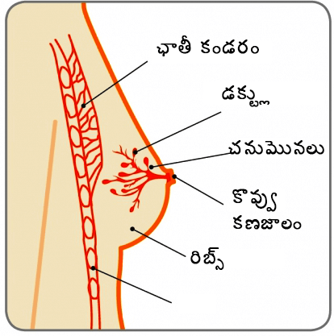

చనుమొన

చాలా రొమ్ముల్లో ఉండే మార్పులు బెనిజిన్( క్యాన్సర్ కారకం కానివి). అయితే, మార్పును ముందస్తుగా గుర్తించడం వల్ల, రొమ్ము క్యాన్సర్ని నిర్ధారణ చేయడానికి మరియు అత్యంత విజయవంతమైన చికిత్సను అందించేందుకు అవకాశం ఏర్పడుతుంది, ఇది మహిళలు జీవించే అవకాశాలను గణనీయంగా మెరుగుపరుస్తాయి.
అయితే ఈ సమాచారం ప్రాథమికంగా మహిళలకు స్వయంసాధికారతను కల్పించేందుకు ఉద్దేశించబడినప్పటికీ, పురుషులు సైతం, తమ రొమ్ము కణజాలాల్లోని మార్పుల గురించి తెలుసుకోవచ్చు. పురుషులకు కూడా రొమ్ము క్యాన్సర్ వస్తుందనే విషయం చాలామంది వ్యక్తులకు తెలియదు. చాలా తక్కువ సంఖ్యలో పురుషులకు సైతం రొమ్ము క్యాన్సర్ వస్తుంది( పురుషుల్లో 1%మందికి రొమ్ము క్యాన్సర్ వచ్చే ప్రమాదం ఉంది- అంటే 1/100)
రొమ్ము

రొమ్ములను పాలగ్రంధులు అని కూడా అంటారు, ఇవి గ్రాన్యులర్ అవయవాల యొక్క జత, పిల్లలు పుట్టినప్పుడు హార్మోన్ల మార్పు వల్ల ఇవి పాలను ఉత్పత్తి చేస్తాయి. ఇది ప్రధానంగా కొవ్వు కణజాలంతో తయారు చేయబడతాయి మరియు, ఛాతీ ముందుభాగంలో ఏర్పడి, చంకల వరకు విస్తరిస్తాయి. వీటికి లిగ్యుమెంట్లు మరియు పెద్ద కండరాల ద్వారా మద్దతు కల్పించబడుతుంది.
ప్రతి రొమ్ముకు కూడా 15 నుంచి 20 లోబ్యూల్లుంటాయి, అధిక సంఖ్యలో లోబ్యులు మరియు డక్ట్లు కొవ్వు మరియు సపోర్టింగ్ కణజాలం ద్వారా మద్దతు కల్పించబడుతుంది (పటాన్ని చూడండి) ప్రతి లోబ్లో కనీసం 30 ప్రధాన డక్ట్లుంటాయి. మరియు అవి చనుమొనలలో తెరుచుకొని ఉంటాయి. చనుమొనలు చుట్టూ ఉండే చల్లని చర్మ ప్రాంతాన్ని స్తన పరివేష్టం అని అంటారు.
ప్రతి చంకల్లో సుమారు 20 నుంచి 30లింఫ్ నోడ్లు ఉంటాయి, ఇవి రొమ్ము నుంచి ద్రవాలను బయటకు పంపుతాయి. ఈ తరహా లింఫాటిక్ సిస్టమ్ అనేది సంక్రామ్యతలకు విరుద్ధంగా శరీరం పోరాడటానికి దోహదపడుతుంది. రెండోదానితో పోలిస్తే మరొకటి పెద్దదిగా ఉండటం అనేది సర్వసాధారణం.
చనుమొన
చనుమొనలు సాధారణంగా ముందువైపుకు ఉంటాయి, అయితే ప్రతి రొమ్ములో అవి విభిన్నంగా కనిపించవచ్చు. ఒకటి లేదా రెండు చనుమొనలు కూడా లోపలివైపుకు తిరిగి ఉండటం అసాధారణ విషయం కాదు. ఇది పుట్టినప్పటి నుంచి లేదా రొమ్ములు అభివృద్ధి చెందినప్పటి నుంచి ఉండవచ్చు. చనుమొనలపై వెంట్రులుండవు, అయితే కొంతమంది మహిళలకు స్తనపరివేష్టం చుట్టూ కొంత జుట్టు ఉండవచ్చు..
అతి తక్కువ సంఖ్యలో మహిళల్లో అదనపు రొమ్ము లేదా రొమ్ముల జత ఉండవచ్చు, దీనిని అనుబంధ రొమ్ములు అని అంటారు. ఇవి సాధారణంగా దిగువ చంకల్లో ఉంటాయి. కొంతమంది మహిళలకు అదనంగా చనుమొన లేదా చనుమొనలుంటాయి. ఇది సాధారణంగా రొమ్ముకు దిగువన లేదా బొడ్డుకు పైన ఉంటాయి. అనుబంధ రొమ్ములు లేదా అదనపు చనుమొనలు అనేవి సాధారణంగా ఒక సమస్య కాదు మరియు వీటిని తొలగించాల్సిన అవసరం లేదు.
చంక లో యాక్సేసరి ఛాతీ

రజస్వల అయినప్పటి నుంచి క్రమం తప్పకుండా రొమ్ముల్లో మార్పులు కనిపిస్తాయి, మహిళా హార్మోన్ ఈస్ట్రోజిన్ యొక్క స్థాయిల్లో మార్పుల వల్ల బాల్యం నుంచి కౌమారదశ తరువాత మోనోపాజ్ వంటి దశలుంటాయి.
చాలామంది బాలికలకు రొమ్ములు 9 నుంచి 11 సంవత్సరాల కాలంలో మొదలవుతాయి, అయితే కొంతమంది ముందుగా లేదా తరువాత ఏర్పడవచ్చు. విభిన్న రేట్లతో రొమ్ముల పెరుగుదల ఉండటం అనేది సాధారణం కాదు. రొమ్ములు అభివృద్ధి చెందేటప్పుడు రొమ్ములో గడ్డలు వస్తాయి. ఇవి సాధారణంగా వ్రణంలా ఉంటాయి అయితే రోగినిర్ధారణ చేయబడిన తరువాత సాధారణంగా ఎటువంటి చికిత్స అవసరం లేదు.
రొమ్ములు అభివృద్ధి చెందినప్పుడు, నెలవారీ రుతుచక్రానికి సంబంధించిన మార్పులు సర్వసాధారణం. రుతుచక్రానికి ముందు రొమ్ములు పెద్దవిగా, తాకితే నొప్పికలిగేంత సుకుమారంగా లేదా కాస్తంత ముద్దగా ఉన్నట్లుగా అనిపించవచ్చు. రుతుచుక్రం ముగిసిన తరువాత, ఈ ముద్దలు పూర్తిగా అదృశ్యం అవుతాయి(కొంతమంది మహిళలకు ఎప్పుడూ ఇదేవిధంగా ఉంటుంది). చాలామంది మహిళలకు వారి రుతుచక్రానికి మరియు రొమ్ముల్లో నొప్పికి సంబంధం ఉంటుంది. మరింత సమాచారం కొరకు రొమ్ము నొప్పిపై సమాచార శ్రేణిని రిఫర్ చేయండి.
గర్భధారణ కాలం అంతటా కూడా స్తన్యం ఇవ్వడానికి సిద్ధం కావడం కొరకు రొమ్ముల్లో మార్పులు జరుగుతుంది. మొదటి అవి మరింత మెత్తగా మరియు మరింత సున్నితంగా మారతాయి. రొమ్ములు మరియు స్తన పరివేషం మరింత పెద్దవిగా మారతాయి( పాలను ఉత్పత్తి చేసే కణాలు పెరుగుతాయి)మరియు చర్మంపై రక్తనాళాలు మరింత స్పష్టంగా కనిపిస్తాయి. చనుమొనలు నలుపుగా మారతాయి మరియు గర్భధారణ కాలం అంతటా కూడా ఇదేవిధంగా ఉంటుంది.
స్తన్యం ఇచ్చేటప్పుడు పెద్దమొత్తంలో పాలు ఉత్పత్తి అవుతాయి, అందువల్ల ప్రతిరోజూ అనేకసార్లు రొమ్ముల యొక్క పరిమాణం మారుతుంది. స్తన్యం ఇవ్వడం ఆగిపోయిన తరువాత రొమ్ములు గర్భధారణ ముందు ఏ పరిమాణంలో ఉన్నాయో అదే పరిమాణానికి వస్తాయి, అయితే విభిన్న సైజులో ఉండే లేదా తక్కువ దృఢంగా ఉండటం జరగవచ్చు.
రొమ్ముకణజాలం వయస్సుతోపాటుగా మారుతుంది. పాలను ఉత్పత్తి చేసే కణజాలాన్ని కొవ్వుతో ఉన్న కణజాలాలు భర్తీ చేసినట్లయితే, అవి దృఢత్వాన్ని కోల్పోతాయి, అందువల్ల రొమ్ములు సాగిపోతాయి. మోనోపాజ్ తరువాత, ఆస్ట్రోజిన్ లెవల్స్ తగ్గిపోయిన తరువాత మరియు రుతుచక్రం ఆగిపోయిన తరువాత ఇది ప్రస్ఫుటంగా కనిపిస్తుంది. పెద్దవారైన తరువాత,రొమ్ముల సైజు మారవచ్చు. ఒకవేళ హెచ్ఆర్టి( హార్మోన్ రీప్లేస్మెంట్ థెరపీ)ని తీసుకుంటున్నట్లయితే, రొమ్ములు కొన్నిసార్లు మరింత సున్నితంగా మారవచ్చు.
మీ శరీరాన్ని సంరక్షించుకోవడంలో రొమ్ము అవగాహన అనేది ఎంతో కీలకమైనది. రొమ్ము అవగాహన కలిగి ఉండటం అంటే మీ రొమ్ముల గురించి మరియు మీ జీవితకాలం అంతటా కూడా ఏవిధంగా మార్పు చెందుతున్నాయని తెలుసుకోవడం. మీ రొమ్ములు ఏవిధంగా కనిపిస్తున్నాయి మరియు సాధారణంగా ఎలా అనుభూతి చెందుతున్నారో తెలుసుకోవడం అని అర్థం, తద్వారా మీకు అసాధారణంగా ఉండే దేనినైనా గమనించినట్లయితే మీరు ఆత్మవిశ్వాసంగా ఉంటారు.
ప్రతి ఒక్కరొమ్ములు విభిన్నంగా ఉంటాయి మరియు విభిన్నంగా అనుభూతి చెందుతారు. కొంతమందికి ముద్దలా ఉండే రొమ్ములుంటాయి, లేదా ఒకదానితో పోలిస్తే రెండోది పెద్దదిగా ఉండవచ్చు, లేదా రొమ్ములు విభిన్నంగా ఉండవచ్చు. కొంతమందిలో ఒకటి లేదా రెండు చనుమొనలు లోపలికి తిరిగి ఉంటాయి, పుట్టినప్పటి నుంచి లేదా రొమ్ములు అభివృద్ధి చెందే దశ నుంచి ఇవి ఇలా ఉంటాయి. మీరు రొమ్ములను చెక్ చేసినప్పుడు, మీకు విభిన్నంగా కనిపించే ఏవైనా మార్పుల గురించి అర్థం చేసుకోవడానికి ప్రయత్నించండి.
క్రమం తప్పకుండా మీ రొమ్ములను గమనించి, వాటిని ఏవిధంగా అనుభూతి చెందుతున్నారనే విషయాన్ని అలవాటు చేసుకోండి. దీనిని చేయడానికి ఎలాంటి నిర్ధిష్ట మార్గం లేదు, ఒకేసారి మీరు చూసి, వాటిని అనుభూతి చెందాల్సిన అవసరం లేదు. కొంతమంది మహిళలు డ్రెస్ వేసుకునేటప్పుడు లేదా విప్పదీసేటప్పుడు, స్నానం చేసేటప్పుడు లేదా బాడీ లోషన్ అప్లై చేసేటప్పుడు దీనిని చేయవచ్చు. కొంతమంది మహిళలు అద్దాన్ని ఉపయోగిస్తారు; కొంతమంది ఉపయోగించరు. మీకు ఏది సౌకర్యవంతంగా మరియు సౌఖ్యంగా ఉంటుందో దానిని ఎంచుకోవచ్చు. రొమ్ము యొక్క అన్నిభాగాలను, మీ ఛాతి యొక్క ముందువైపుపై నుంచి, దిగువన మీ చంకల వరకు ప్రతిభాగాన్ని అనుభూతి చెందడం ముఖ్యం
రొమ్ము మరియు ఛాతీ ప్రాంతంలో దిగువ పేర్కొన్నవాటితో సహా చూడటం మరియు అనుభూతి చెందడంలో మార్పులు:
ఏ మార్పుల గురించి నేను తెలుసుకోవాలి?
మీకు కొత్తగా లేదా విభిన్నంగా ఉండే ఏవైనా మార్పుల గురించి మీరు తెలుసుకోవాలి,అవి:

సౌజన్యం: బ్రెస్ట్ క్యాన్సర్ కేర్, యుకె

సౌజన్యం: బ్రెస్ట్ క్యాన్సర్ కేర్, యుకె

సౌజన్యం: బ్రెస్ట్ క్యాన్సర్ కేర్, యుకె

సౌజన్యం: బ్రెస్ట్ క్యాన్సర్ కేర్, యుకె

సౌజన్యం: బ్రెస్ట్ క్యాన్సర్ కేర్, యుకె

సౌజన్యం: బ్రెస్ట్ క్యాన్సర్ కేర్, యుకె

సౌజన్యం: బ్రెస్ట్ క్యాన్సర్ కేర్, యుకె

సౌజన్యం: బ్రెస్ట్ క్యాన్సర్ కేర్, యుకె

సౌజన్యం: బ్రెస్ట్ క్యాన్సర్ కేర్, యుకె
రొమ్ము అవగాహన 5- పాయింట్ల కోడ్